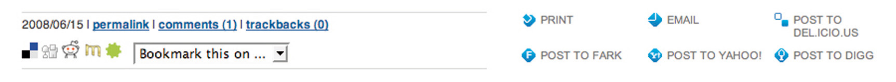

Social media have changed the world we market in and can be used as an integral part of an online marketing campaign. Social media are all about the ways that we create, connect, and share online.
If there are Web sites that you visit often or that you would like to keep as a reference to come back to, it is easy to use your browser to “bookmark” them. This means that you store the URL (uniform resource locator) so that you can locate it again easily. It also gives you a personal library of Web sites that you can store on your computer.
Social bookmarkingSaving the address of a Web page or Web site so that it may be easily referred back to. Bookmarks can be managed with a browser or with an online tool. sites, however, allow you to store these links online, use tagsLabels describing what content is about in social media. to describe them, and share these lists with other users. Some of these sites let you submit URLs that other users vote on, while others allow you to use the saved tags to browse through the lists and libraries that have been generated.
Web sites that want to encourage users to submit content to bookmarking and aggregating sites use “chickletsLittle buttons that make it easy to share or save information using social media services..” These are buttons placed around the content that make it easier to submit and share the article.
These services allow you to see what the community of Web users finds useful, interesting, or humorous. You are able to find other users with similar interests to yours and explore Web sites that they have found that you might not have come across yet.
Social bookmarking allows like-minded people to share interesting and relevant content with one another easily. It can also be an excellent tool for members of a company or organization to earmark relevant Web sites and articles. Content submitted to a social bookmarking or aggregating site can dramatically increase traffic to a Web site and expose the site to many new eyeballs.
One such site, Delicious (http://delicious.com), was created in 2003 by Joshua SchacterMichael Arrington, “Exclusive: Screen Shots and Feature Overview of Delicious 2.0 Preview,” TechCrunch, September 6, 2007, http://www.techcrunch.com/2007/09/06/exclusive-screen-shots-and-feature-overview-of-delicious-20-preview (accessed April 2, 2008). and today boasts over five million users.Wikipedia, s.v. “Delicious (website),” http://en.wikipedia.org/wiki/Delicious_%28website%29 (accessed June 22, 2010). It was designed to be a site that would help Internet users organize online media in a quick, easy-to-access, and user-friendly format. Now owned by Yahoo! the primary function of Delicious is to allow users to store all their bookmarks online and then to access those bookmarks from any computer anywhere in the world. Compared to other social bookmarking sites, Delicious is more of a community-based tool, as it allows others to see your bookmarks. Essentially it lets you identify other people whose interests and concerns parallel yours and grants you access to all of their bookmarks as well.
Check out http://delicious.com/quirkemarketingtextbook to see some of the URLs we think are relevant to your eMarketing studies and career.
Alexa is a service that ranks the popularity of Web sites. It is based on the Internet habits of users of the Alexa toolbar as well as the Quirk SearchStatus Firefox extension, so these rankings are based on a percentage of the global Internet population.
Digg (http://www.digg.com), Muti (http://www.muti.co.za), and Reddit (http://www.reddit.com) are sites where users submit content that other users can then vote on. Popularity, based on votes, moves the submitted content up and down lists that are available on these sites. Submitting and voting requires registration, but there are many people who visit these sites to get an overview of content that is “hot.” In fact, in late 2009, Digg was at 102 in the Alexa rankings. Although its traffic is said to be declining, it is still generating plenty of traffic each day.
Appearing on the top of these lists generates a huge increase in traffic for content sites, so much so that servers can crash if the leap in visitors is unexpected. Getting into the top listings is a prize eyed by many a marketer, but any attempt to manipulate listings usually backfires and can generate plenty of community backlash.
The communities around these sites differ demographically, and this is reflected in the content. For example, Digg is technology focused, while Reddit tends to have more general news.
StumbleUpon (http://www.stumbleupon.com) lets you explore the Web through your interests, based on how other Web users tag content. Users select categories of interest and bookmark URLs in those categories. You can then choose to “stumble” through the Web using the category of your choice. The service will randomly show you a Web site that has been submitted to that category.
Some Internet commentators refer to this taxonomyClassification and division into ordered categories, usually hierarchical. In social media, taxonomy can refer to the categorization of content on the Internet.—the categorization of Web content based on labels and tags supplied by Web users—as a folksonomyCategorization or taxonomy based on social media tags.—a way of categorizing content that the community creates, as opposed to hierarchical categorization by a central body.
StumbleUpon allows users to explore the Web based on the taxonomy applied by other users. Instead of looking to search engines for relevance, users are instead appealing to the knowledge of a community.
Technorati (http://www.technorati.com) started life as a real-time blogA type of Web site that allows users (bloggers) to post entries on different topics and often allows readers to comment on these posts. search engine but has since evolved to incorporate other forms of user-generated content, including images and videos. According to Technorati’s Web site, Technorati tracked over 112 million blogs and 250 million pieces of tagged social media as of early 2008.Wikipedia, s.v. “Technorati,” http://en.wikipedia.org/wiki/Technorati (accessed June 22, 2010). Internationally it is the blog aggregator and an essential tool for anyone who operates online.
Technorati’s core is a tag-based index that allows users to conduct searches on topics that interest them. Contributors are able to tag their individual posts, and the better a post is tagged, the better its chance of being picked up by a relevant search. Instead of contributors being separated into categories, the content of each individual post is indexed. Technorati not only searches the blogs of subscribed members but also operates as a normal search engine.
Technorati can also be used to keep tabs on Internet buzz, both to monitor online reputation and to see what trends are emerging.
Seeing how users categorize your content will give you an idea of how your Web site and company are perceived by your audience. It might be remarkably different from how you think they see you. Look at other Web sites that are tagged like yours. You might find new competitors and new ideas.
You can also use these services to share what other URLs your company finds interesting. This can be a useful resource to add to an online press room as well as a utility that fanatics of your company would get really excited about.
To create link lovePosting a link to sites or blogs, usually unsolicited, that you enjoy, admire, or find useful. and traffic, investigate what sort of content your target audience loves voting for and create that content. A word of warning: never submit content and then vote yourself. It’s one surefire way to incur the wrath of these communities.
Organic growth is the only way to succeed here. It might take time as you build your reputation and worth among the community, but the end result can be very worthwhile. As a content provider, make sure you have the appropriate chicklets added to your content to make it easier to share.
Figure 8.2
Chicklets can be standard, like on http://www.gottaquirk.com on the left, or adapted, as http://www.timesonline.co.uk has done on the right.